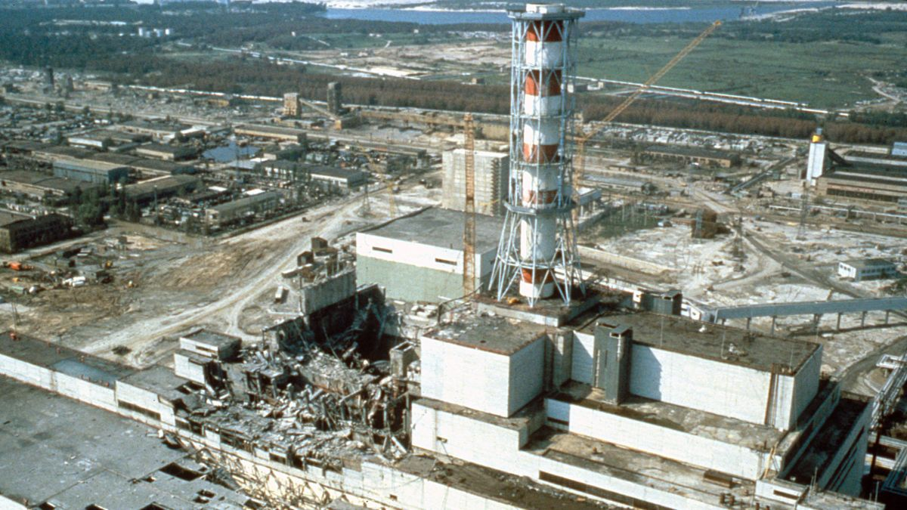

The Chernobyl Disaster and its environmental,
political, regulatory and cultural impacts
Obi O'Brien
Background
On the 26th of April, 1986, workers at the Vladimir Ilyich Lenin Nuclear Power Plant in the region of Chernobyl,
part of what is now northern Ukraine, were planning on carrying out a drill to test the effectiveness of an
emergency shutdown protocol. Nuclear reactors work by utilising the fissile properties of Uranium isotope U-235,
in which neutrons released from splitting atoms cause others to split, releasing more neutrons and so on in a
chain reaction. The reactor that was used at the plant is what is known as an RBMK, and acronym that roughly
translates to ‘High Power Channeled Reactor’ – RMBK’s consist of a set of fixed Uranium fuel rods, with water
pumped over their surface to draw away heat from the reaction and convert it into usable energy via a set of
steam turbines. Alongside the fuel rods are a number of ‘control’ rods that are capable of moving up and down
so as to slow down or increase the speed of the reaction. In RBMKs, the rods are composed of boron carbide,
which absorb neutrons and prevent them from causing more reactions in adjacent fuel rods, acting like a blanket
over a fire. At the tips of these control rods are also a section of graphite, which allows faster-travelling
neutrons to bounce off and slow down instead of being absorbed, causing them to react better with the fuel –
speeding up the reaction instead.
An RBMK reactor. Credit engineering.stackexchange.com
If an emergency situation were to occur, the reactor would be promptly shut down. However, it would still be
producing large amounts of heat from the ongoing reaction, and without the pumps pushing water throught them
it would quickly overheat. So, a set of backup generators were installed to power the pumps in such an event –
but these would take about a minute to start up, so another source would be needed for the first 60 seconds.
A great candidate for this was the turbines usually used as the main conversion point from steam to electricity
- after the shutdown, they would still retain some amount of momentum, enough to power the pumps until the
generators kicked in. The test on the night of the disaster was meant to certify that this could be done for reactor 4.
The incident
So, at 1:23AM local time, it began. The turbines were spun down, and began generating electricity to power the pumps.
However, due to a prior issue before the test resulting from a buildup of xenon, the control rods had been completely
raised out of the reactor, apart from their reaction-enhancing graphite tips. The entire system was now very sensitive
to the density of the water – water on it’s own acts as a neutron absorbant, slowing the reaction, but when it boils
this effect is reduced slightly by the bubbles of steam that reduce the overall density. The reaction became more violent,
which in turn boiled the water more, reducing it’s effectiveness, and so on. It is unclear exactly what caused the
explosion. One theory is that the intense conditions caused the water to seperate into it’s elemental hydrogen and oxygen,
resulting in a massive hydrogen-fueled blast. Another possibility is that the core actually went supercritical,
essentially resulting in a very localised nuclear detonation.
Aftermath
The initial explosion sent several hundred tons of radioactive material hurling into the atmosphere, as well as scattering
hunks of broken graphite blocks from the control rods onto the roof and immediate area. Most of this consisted of the elements
iodine-131, caesium-134 and caesium-137, byproducts of uranium-235’s decay process. Iodine tends to build up in the thyroid
gland, and while it has a half-life of only 8 days, in that time it can plant the seeds for serious thryroid cancer to develop.
Alongside these byproducts, it is estimated that at least 57 tons of the original Uranium is still floating in the atmosphere.
A north-westerly wind carried the volatile plume eminating from the still-smouldering reactor core into neigboring countries
like Russia, Belarus and the majority of Europe, even being detected as far as Canada. As well as the atmospheric particulate,
around 100,000km2 of soil in and around the established 16km exclusion zone was contaminated – for referance, that’s larger
than Tasmania, at 68,332km2.

The collapsed reactor room 4 after the incident. Credit Live Science
Cleanup
The soviet union sent several thousand workers to the site of the incident to aid in the initial cleanup. Many of the workers sent
into more dangerous areas of the complex such as the roof area served only 90 minutes on the job, as the radiation levels were so high
that even a little longer could be fatal. Even then, many of them would end up succumbing to radiation or cancer-related diseases later
in life; but at the time, it seemed a better choice – it was either 2 minutes shovelling debris of the roof, or a couple years in the army.
To this day, the cleanup effort still persists. By June of 1986, construction had began on a concrete ‘sarcophagus’, designed to contain
debris from Reactor 4 and prevent it from leeching more into the surrounding air and environment; it was completed 7 months later in
November, and did a reasonable job at maintaining containtment. However, by the late 90s, concerns began to arise about the ageing
structure’s effectiveness. So, in 2010, French company Novark was commisioned to construct a huge, secondary sarcophagus made out of
pre-assembled metal components shipped in from italy. Over 6 years it was peiced together around 300m away from the complex, then in
2016, it was carefully rolled over the top and fixed in place. The new sarcophagus does a much better job at containing particulates,
and serves as a layer of protection while the old one is disassembled and the insides of the facility are slowly cleaned out. The
cleanup is expected to keep going until around the year 2065, via a slow process of mapping out the internals and removing contaminated
debris bit by bit, most of which will probably be done remotely using specially-suited disposal robots. But even then, the ground within
the exclusion zone is still highly contaminated with fallout, and it is expected that the area will not be habitable as a long-term
settlement again for at least 3,000 years, more likely 20,000 - if not millenia.
The new sarcophagus containement. Credit BBC
Political fallout
While the disaster had fairly major effects on the environment and public health, it also caused widespread consequences for nuclear energy
regulation and geopolitics. Around the same time the incident happened, General Secretary of the Soviet Union Mikhail Gorbachev was carrying
out a countrywide reform referred to as “glasnost”. Glasnost translates quite literally to “publicity”, and the reform was meant to introduce
an era of more openess and transparency between the government and it’s people. Up until Chernobyl, the reform had been proceding moderately
well; but after the accident, the government didn’t inform it’s citizens and neigboring countries of the situation, or even evacuate the
endangered towns of pripyat and central Chernobyl until over 36 hours later. This completely contradicted the values of Glasnost, undermining
the trust between the people and the government, which was already shaky to start with. In the end, the incident as a whole played a key role
in the eventual fall of the Soviet Union only 5 years later in 1991 – some even attribute it as the main driver for why the collapse occurred,
but that is up to debate and opinion.
Public view & the future of Nuclear
But perhaps the most long-lasting impact of the Chernobyl disaster was simply how it swayed the public’s view on nuclear energy. Before the accident,
nuclear seemed like the answer to all our problems; a power source that in the best case scenario emits no pollutants into the air, requires minimal
space, and works in all conditions – indifferent to whether the sun is shining or the wind is blowing. After Chernobyl, however, the overall
perception of how viable it is to use nuclear energy began to darken – and this resulted in less funding for nuclear energy programs, with power
plants becoming rarer and rarer.
Depending on your stance on the matter, this could be a good thing or a bad thing. But it is important to look at things with an objective, unbaised eye.
So, yes, nuclear energy is dangerous. But only without the correct maintenance, procedures and safety fallbacks in place. The RBMK reactor type used at
Chernobyl was chosen not because it was safe, but because it was cheap – using the channeled design with water as both a coolant and absorbant meant
that much cheaper, less-enriched fuel could be used, lowering the operational cost. But this came at the disadvantage of the reactor being unstable
at low-power levels – the designers knew this, but often operators were completely unaware. If the correct safety measures were in place, the incident
would never have happened.
But if we are to solve our current climate problem, we will need to utilise Nuclear energy – but only as a stepping stone to future technologies like fusion.
If we take a look at the amount of deaths caused by fossil fuels, per terawatt-hour of electricity produced – for referance, about enough to power 70,000
houses for a year. In the graph below we can see that Nuclear results in approximately 0.03 deaths for every terawatt-hour – which is actually lower than wind.
On the other hand, oil results in 18, and coal 24 – that’s over 800 times more, causing in excess of 8 million deaths a year. Newer resarch has even shown
that around 1 in 5 deaths can be linked back directly or indirectly to fossil fuels. And sure, you can make a point about the long-lasting nature of
contamination in the environment, which is a valid argument, but at least that is only localised. Every year, 34 billion tons of greenhouse gases are
released into the atmosphere, which impacts on the entire planet - and the timescales needed to naturally cleanse such gases out of the air aren’t
much smaller than the prediced decay times or nuclear contamination. But if we are going to roll out Nuclear power, we will need to do it in a safer
way than in the past, with new designs, procedures and emergency protocols.
Death rates from various energy sources. Credit Our World in Data
All in all, Chernobyl was a terrible disaster that will hopefully never happen again. But it taught a powerful lesson about the importance of the right
safety measures needed to ensure that a repetition should never occur, even in the worst case scenario, as well as the need for a plan for containement
and cleanup in the event that it does.
Sources
[No Author] “Chernobyl Accident 1986” World Nuclear Association 2022 (Accessed 07-08-2023) [Link]
[No Singular Author] “Chernobyl disaster” Britannica 2023 (Accessed 07-08-2023) [Link]
Manley, Scott “Why Chernobyl Exploded - The Real Physics Behind The Reactor” YouTube 2019 (Accessed 08-08-2023) [Link]
[No Author] “Sequence of Events – Chernobyl Accident Appendix 1” World Nuclear Association 2019 (Accessed 08-08-2023) [Link]
[No Author] “Effects of the Chernobyl disaster” WikiPedia 2023 (Accessed 09-08-2023) [Link]
[No Author] “Chernobyl: Timeline of Events” Atomic Archive 2023 (Accessed 09-08-2023) [Link]
[No Author] “Chernobyl Radiation, Levels of Radiation After the Disaster” Nuclear Energy 2023 (Accessed 09-08-2023) [Link]
[No Author] “FAQ about Tasmania” Tasmania Attractions 2023 (Accessed 09-08-2023) [Link]
[No Author] “Radiation: The Chernobyl accident” World Health Organization 2011 (Accessed 09-08-2023) [Link]
Bendix, Aria “Chernobyl’s ‘sarcophagus’ is getting dismantled because it’s teetering on collapse.” Business Insider 2019 (Accessed 09-08-2023) [Link]
Green, Hank “What /Actually/ Happened at Chernobyl” YouTube 2019 (Accessed 09-08-2023) [Link]
White, Robin “Chernobyl Aftermath: How Long Will Exclusion Zone Be Uninhabitable?” Newsweek 2022 (Accessed 09-08-2023) [Link]
Carlson, John “Chernobyl: The continuing political consequences of a nuclear accident” The Interpreter 2019 (Accessed 12-08-2023) [Link]
[Multiple Authors] “International Nuclear Law in the Post-Chernobyl Period” International Atomic Energy Agency 2006 (Accessed 14-08-2023) [Link]
[No Author] “If emissions of greenhouse gases were stopped, would the climate return to the conditions of 200 years ago?” The Royal Society 2020 (Accessed 14-08-2023) [Link]
[No Author] “Fossil fuel air pollution responsible for 1 in 5 deaths worldwide” Harvard Center for Climate, Health and the Global Environment 2021 (Accessed 14-08-2023) [Link]
Hannah Ritchie, Pablo Rosado and Max Roser “Nuclear Energy” Our World in Data 2022 (Accessed 14-08-2023) [Link]